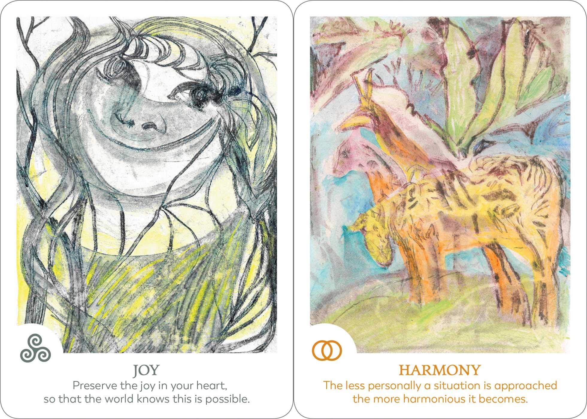

In the Findhorn community we practice living in direct communion with nature and honouring the spirit beings that have their home in the etheric realms. They certainly have a lot of wisdom to share with us and always remind us of a balanced way of being in harmony and conscious co-creation with each other and the Earth.
Every aspect of our life is intrinsically connected with the subtle realms, the elementals and the Devas which hold the blueprint of our manifested reality. In all mystical traditions it is taught that there is an unseen universe of spirit beings who are willing to interact and cooperate with humans to foster the evolution of life on Earth.
Some of these co-creative interactions took place at Findhorn through Dorothy Maclean, who first received the message to initiate a conversation with the spirit overlighting the growth of the plants in the garden that is now called the Original Garden. She referred to these beings as Devas, a Sanskrit word that means “shining one,” and described them as “the intelligence of nature”. Through the practical application of the guidance she received, the garden and the Findhorn community rapidly developed, growing from very humble beginnings in a windswept caravan park into an ecovillage and vision of hope for humanity.
The spirit realms respond to the intention of human consciousness and can help us to attune to the energy matrix and original design of every form in existence, therefore bringing a more balanced world into manifestation.
They are ready to assist us during times of collective transition to a more loving and embodied consciousness.
They wish to serve as guides, allies and companions on our earthly journey and are interested in establishing a dialogue with us humans. When you are blessed with even one such connection you know how precious and magical these spirit beings are, but if not, you are in the right place to start opening the space for communication with the subtle realms.
The pictures on the Findhorn Spirit Oracle cards came through in the week following the 2018 Co-Creative Spirituality conference at the Findhorn Foundation, using a meditative technique called touch-drawing. No pencils or brushes were used while drawing, only the touch of hands and fingernails on tissue paper placed on a board on top of colours.
Many of the spirit beings who were invited during that time to actively participate in co-creation with humans made themselves available and accessible.
The messages that have been received in connection with each of the spirit beings depicted in the cards encourage us to reconnect with our essential nature, to expand our awareness to new realities, to activate our full vital energy and to engage our power of co-creation with the divine, opening to the joy of partnership with the subtle realms.
These cards can also serve as a way to establish a deeper relationship with part of our consciousness that tends to be excluded or forgotten. If you have been drawn to this deck trust that it isn’t by chance... the subtle realms are enticing you!
Each image represents a spirit being that has made itself visible in a specific shape suitable to be understood by human consciousness, and is ready to connect with you. For this purpose a finely tuned instrument is needed: our human body.
Through practice we refine our communication channels and are able to attune to the subtle dimensions of reality and hear their guidance. Our essential nature is akin to a gentle openness, a spaciousness, a state of flow and relaxation. We mostly find these qualities when we live a heart-centered life. The cards and the oracle art are an invitation to discover your true nature. Let's keep in touch!